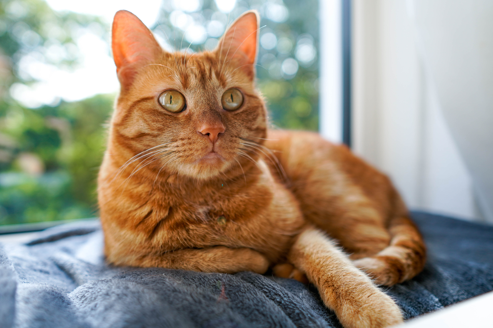
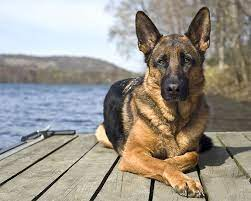
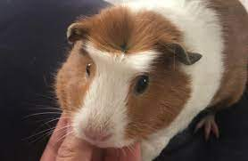
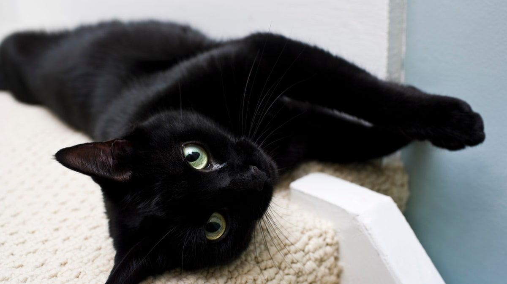

Home On The Range
These animals at Home On The Range are eager for a new home. Maybe one of them will be yours?
So many people love animals. Unfortunately, there are so many animals that not all of them live in the happy home that they deserve. When you adopt one of these beautiful animals, you'll be forming a bond that will last a lifetime!
Ginger

Ginger is a three year old orange tabby cat. She can be quite shy at first, but once she becomes comfortable in your presence, she'll hardly ever leave your side! She loves cuddling, being petted, playing with toys and eating treats. She can also be quite mischievous at times. Ginger will definitely keep you on your toes!
Duke

Duke is a four year old german shepherd. Fiercely loyal, highly intelligent, and full of rambunctious energy, you'll fall in love with Duke very quickly! He is a very active dog who loves to play and go on long walks. If you aren't already leading a very active lifestyle, you certainly will when you adopt Duke. Unfortunately Duke was abused when he was a puppy, so he can be a bit shy and standoffish around strangers. However, he warms up to people very quickly!
Juniper

Juniper is a two year old New Zealand white rabbit. She is a total sweetheart! Juniper is highly curious and full of high spirits. She is a very affectionate rabbit and she loves to sit near you, climb on your back, and even nibble at your socks! She has a voracious appetite and loves to play with other friendly rabbits.
Alice

Alice is a one year old English crested guinea pig. She is a very docile animal with a calm personality. She can initially be shy, but she can be very friendly once she gets familiar with people. Alice does not like to be picked up or held, but she is very attentive and curious. Even though she is shy and reserved, she has a very mischievous side. Don't take your eyes off her!
Basil

Basil is two year old black cat. She is very friendly, rambunctious, and cuddly! She is a highly curious cat and is constantly intrigued by the most seemingly ordinary things. She loves to lay on your lap, and she will hardly let you sleep a night alone! Basil might just be the most lovable kitty you'll ever have!